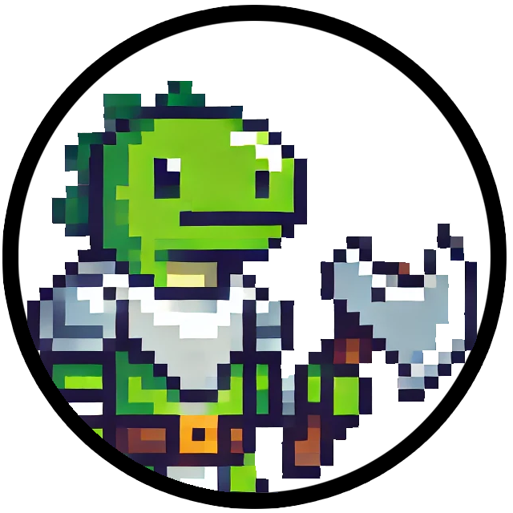
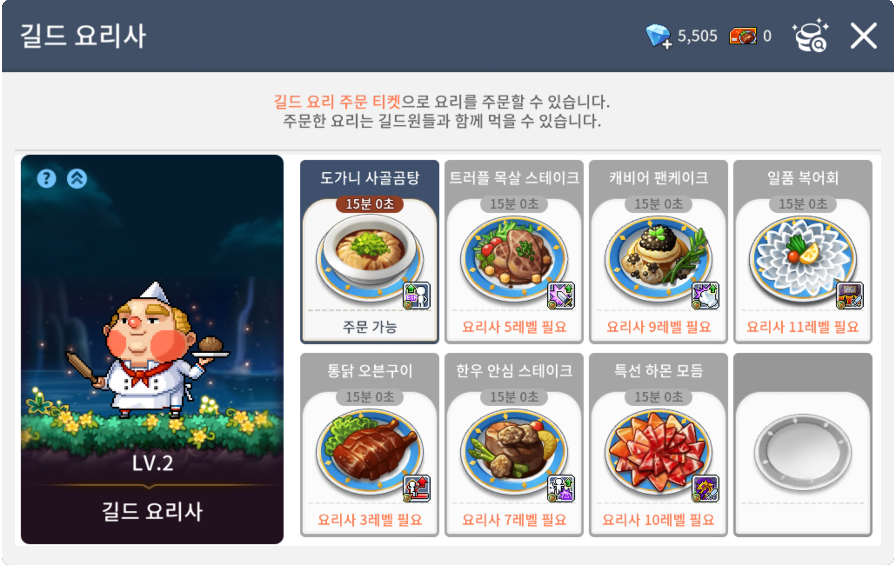
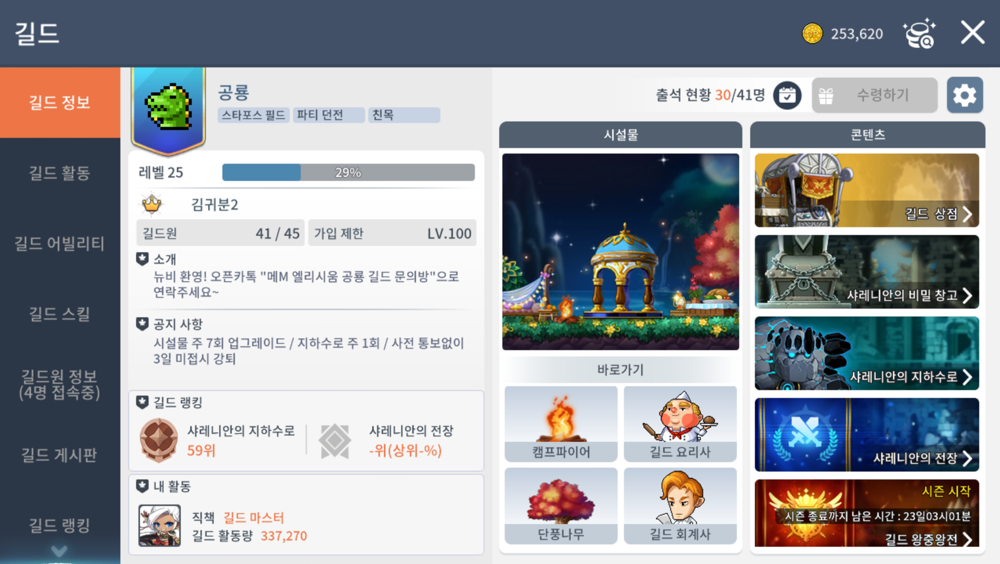
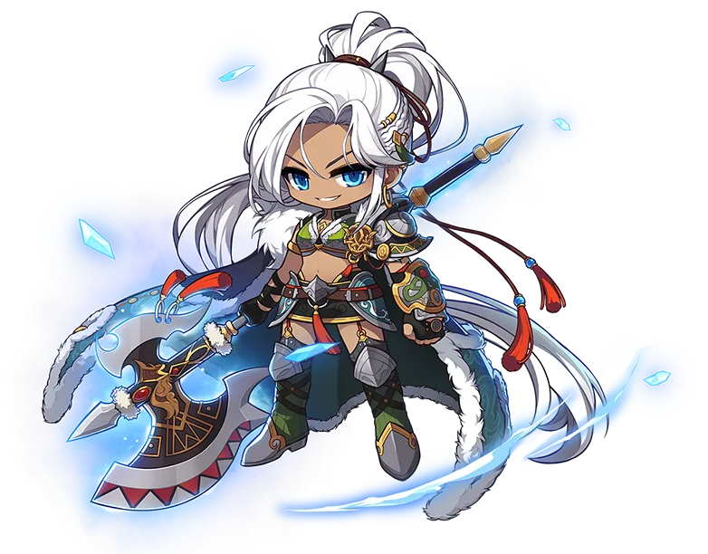
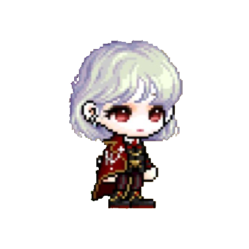

(1호) 어서오세요! 공룡 길드에
작성일 : 2025.02.19.
어서오세요! 공룡 길드에
[게임 정보]
Editor : 
길마입니당
안녕하세요! 주간 공룡의 첫 발간입니다!
여러분들께 어떤 소식을 전해드릴까 고민하다가, 첫 소식에 걸맞게 “길드에 관련된 정보를 전해드리는 것이 좋지 않을까?”라는 생각을 하게 됐어요!
그래서 준비한 정보! 함께 들여다볼까요?
공룡 길드의 탄생 비화
공룡 길드는 처음에 아주 작은 부캐길드였습니다!
2024년 05월 12일에 제 부캐인 “김귀분3”이 설립해서 키우다가, 2024년 7월 쯤에 본격적으로 본캐 길드로 전환되었어요.
(길드 이름은 길마가 공룡을 너무 좋아해서 혹시?하는 마음에 입력해봤는데, 바로 생성되어서 며칠동안 신이 났었죠😄)
본캐 길드로 전환하게 된 이유는, “자유로운 보스 파티를 만들고 싶어!”였습니다. 고정파티에 끼게 되면 일정이 생겼을 때 대타를 구해야하거든요😥
그리고 저는 디스코드를 꾸미거나, 지금처럼 홈페이지를 만들어 꾸미는걸 아주 좋아해서 새로운 길드를 만들면 이것저것 해보고싶었답니다!
(기존에 있던 길드에서도 이런저런 창구를 많이 만들어두셨지만 제가 관리할 수는 없으니까요)
이야기가 길어졌네요! 옛날 이야기는 여기까지만 하고, 진짜 정보로 넘어가볼까요?
길드! 대체 뭐가 중요한데?
게임을 플레이하다보면 간혹 고확으로 “길드 구합니다 귓”과 같은 내용을 보셨을거예요.
이 게임에서 도대체 길드가 얼마나 중요하고, 왜 중요하길래 확성기까지 써가면서 구하려고 하는걸까요?
🤔 길드 시설물도 내실이라고?
자세한 설명을 위해 시설물 별로 나눠볼게요!
- 도서관
도서관은 길드 개인 스킬의 한도를 결정해요. 도서관의 레벨에 따라, 길드 포인트로 올릴 수 있는 스킬의 개수가 정해집니다.
작성일 기준 도서관이 레벨 6인데, 보스에 유효한 스킬은 레벨 7~8부터 보기 때문에 공룡 길드 도서관은 여전히 업그레이드가 필요하답니다!
- 단풍나무 / 캠프파이어
이건 자세히 설명 안드려도 아시겠죠? 레벨 업과 관련 깊은 시설물입니다.
특히, 단풍나무는 파티 경험치 버프 효과가 있어 핫타임에 가장 중요한 버프 중 하나예요! 파티 경험치는 링크스킬, 소울, 길드 개인 스킬, 업적 뱃지 등으로 얻을 수 있지만 각각 수치가 너무 낮아서 도핑 하나하나가 매우 소중해요😂
물론 경험치를 버프해주는 캠프파이어도 중요하지만, 경험치 쿠폰이나 길드 공용 스킬이라는 대체재가 있기도 하고, 경증 400%는 비교적 쉽게 채울 수 있기 때문에 저는 굳이 따지자면 단풍나무가 더 중요한 것 같아요!
- 회계사
매주 월요일이 되면, 길드 메인 화면의 아래에 회계사에 빨간점이 생기는건 알고 계실거예요!
그 주의 길드 활동량을 기준으로 길드 포인트를 정산해 받을 수 있는데, 회계사의 레벨이 높아질수록 동일 활동량 대비 많은 포인트를 얻을 수 있다는 사실!
길드 포인트가 길드 개인 스킬 외에도 포켓 연장, 아이템 드롭 도핑, 혈맹의 반지 아이템 구매에도 사용되는걸 감안한다면… 중요한 시설물이겠죠?
- 요리사
요리사는 사실 위의 시설물들보다는 중요도가 높지는 않다고 생각해요.
요리사가 레벨업 할 때마다 요리 목록이 늘어나는 것도 아니고, 요리 주문에도 길드 포인트가 필요해서 상위권 유저들이 도핑 용도로 사용하는 정도죠.
하지만 요리 목록을 자세히 보시면…

보이시나요? 보스와 관련된 요리 외에도 HP나 경험치와 같은 메뉴들도 있답니다!
사냥할 때에도 요리사가 도움이 된다니… 경험치 쿠폰이 없다면 생각해볼만한 선택지겠죠?
그리고 내가 주문한 요리는 유효기간동안 다른 길드원들도 버프를 받을 수 있어요! 상위 보스에 도전할 때 한 명이 대표로 주문해도 좋을 것 같네요!
🤗 길드 활동을 열심히 합시다!
접속 시간이 오래될수록, 티켓을 사용하는 컨텐츠를 진행할수록 길드 활동량이 누적됩니다.
| 👉🏻 티켓을 사용하는 컨텐츠 |
- 디멘션 인베이드
- 미니던전
- 요일던전
- 엘리트던전
- 무릉도장
- 이볼빙 시스템
- 데비존
- 네트의 피라미드
|
그렇다면, 길드 활동량 누적은 단순히 내 길드 포인트를 위해서 일까요?
정답은 No 입니다!
길드 메인 화면을 보시면 좌측 메뉴 옆 공룡 아이콘 아래에 퍼센트로 표시된 막대 그래프가 보이실거예요.

이 게이지는 모든 길드원의 길드 활동량이 길드 경험치가 되어 표시된 건데, 길드 레벨에 따라 요구되는 활동량이 증가한답니다! (캐릭터 레벨 시스템이랑 똑같죠?)
경험치가 100%가 되면 길드도 레벨업을 해요.
캐릭터도 아니고, 길드가 레벨업은 왜 해?
라는 생각이 드셨을 수도 있겠지만(저는 뉴비 때 그렇게 생각했어요😝) 길드 레벨은 생각보다 유용합니다!
길드 공용 스킬은 잘 사용하고 계신가요? 길드가 레벨업을 하게 되면 이 공용 스킬을 한 번 업그레이드할 수 있답니다!
물론 길드원이 다이아를 사용해 몇 번이고 업그레이드할 수 있지만, 한 번에 다이아 200개라니.. 저라면 열심히 활동해서 레벨업을 노려볼래요..(해주신다면 사양하지는 않을게요😉)
그리고 가입할 수 있는 길드 인원이 한 명 더 늘어나기도 해요!
길드 공용 스킬에 길드원 증가 스킬이 있지만, 레벨업을 해서 늘어난 인원이랑은 별개니까 이 부분도 중요하겠죠?
자! 여기까지가 게임 시스템적으로 길드가 중요한 이유였습니다!
그럼 이제 게임 자체의 “길드 시스템” 외적으로도 중요한 이유를 알아봐야겠죠?
👍 길드 파티가 최고야!
- 보스 파티
상위 보스로 갈수록 길드팟은 의미가 큽니다!
위에서 제가 길드를 만들게 된 큰 이유 중 하나로 말씀드리기도 했지만, 공팟(대체로 고정팟)보다는 길팟이 자유롭습니다.
우선 대타를 안 구해도 된다는 점!!⭐️⭐️⭐️
길드마다 상이할 수는 있겠지만, 공룡 길드의 경우에는 더스크까지 명단제로 운영하기 때문에 시간이 안된다면 참여하지 않으셔도 됩니다!
고정팟의 경우에는 일회성으로도 그렇고 한 번 들어가면 나올 때도 대타를 구해야해서 실제로 많은 분들이 용병을 더 많이 선택하시곤 해요.
그리고 진짜 공팟(빠입으로 만들어지는 파티)은 스펙, 숙련도에 대한 제한도 없고 알 수도 없기 때문에 심각할 경우 5트, 6트를 하는 경우도 많습니다😥
무엇보다도 공룡 길드 보스팟은 디스코드로 오더도 들을 수 있고, 파티에 참여하지 않아도 화면 공유를 통해 미리 패턴을 숙지할수 있어요!
게다가 길드에 버스 기사님들도 많다보니 데카 걱정 없이 내가 기여도를 채울만한 딜이 되는지 테스트도 가능하답니다!
공룡 길드에서 같이 보스 안 할 수가 없겠죠?
- 사냥 파티
길드에서 사냥 파티를 만들어 파사를 하기도 해요.
특히 레벨이 올라갈수록 메소를 벌거나, 코젬/심볼/조각을 위해 밤샘팟을 하게 되는 경우가 많은데요,
길드팟을 만들게 되면 이러한 소통을 편하게 한다는 점이 최대 장점입니다!
오늘 같이 밤샘 파사 하실 분?
처럼, 혼자 도는 불상사를 줄일 수도 있는 데다가 미리 파경을 맞춰 밤샘에서도 경험치까지 이득을 볼 수도 있죠.
이외에도 한 채널에 두 개 이상의 파티가 생성된 겹팟의 경우에도 길드 단톡에서 신속하게 소통하여 채널을 옮기는 등 단점보다 장점이 훨씬 많은 것이 길드 파사팟입니다!
마무리하기 전에, 길드 파사를 하실 때 꿀팁을 알려드리자면 가장 늦게까지 접속 가능한 분이 파티장을 맡아 약속 시간에 파티원들을 추방시켜주세요!

위의 자동전투 설정 창에서, 빨간색 박스와 같이 설정하신 분들은 파티장이 추방할 경우 자사가 멈추면서 자사 손해 없이 핫타임 꽉 채운 파사가 가능합니다😉
이외에도 자문이나 거래 등 이점이 많지만, 내용이 길어지니 필요하다면 심화편을 따로 만들어 다뤄볼게요!
길드원 인터뷰
~ 내가 나를 인터뷰하게 된 건에 대하여 ~
[길드 소식]
Editor : 길마입니당
첫 번째 소식지이다보니, 제가 첫 인터뷰가 되어야할 것 같은데 편집자도 저라서… 그렇게 됐습니다…
그럼 빠르게 진행해보겠습니다!
Q1. 본인의 직업 소개와 고르게 된 이유는?
제 직업은 아란 입니다! 폴암을 무기로 하는 멋진 전사예요!

소개를 가볍게 드리자면, 평타 기반의 묵직한 맛이 있는 직업입니당👍
선택 이유로는 옛날부터 모든 게임에서 전사만 키웠었는데, 10년도 더 전 쯤에 메이플을 오랜만에 접속해보니 아란이 출시되어있더라구요.
전붕이협회 출신으로서 못 참고 플레이 해봤는데… 일단 이뻐요… 우리 아란이 이쁩니다…
그때부터 아란에 꽂힌건지 메M을 시작하면서부터도 무조건 가슴이 시키는 아란을 선택하게 됐습니다!
닉네임 뒤에 “2” 때문에 직변한걸로 오해하시는 분들이 많은데, 출시하고 얼마 안되어서 “김귀분”이라는 캐릭터를 만들었다가 오랜만에 복귀하면서 새로운 마음으로 만든게 “김귀분2”입니다!
뉴비 시절에 유니온도 몰라서 옛날 캐릭을 지워버렸지만요😥 TMI로, 김귀분1은 다크나이트입니당!
Q2. 나의 메이플M 캐릭터 코디 철학은?
저는 무조건 원래 일러스트에 최대한 가깝게 구현하자를 기본으로 코디합니다!
특히 헤어와 성형의 생김새는 제 취향대로 선택하지만, 색깔만큼은 원본에 가깝게 하려고 합니다!
말이 나온 김에, 제 메생 역작 3개 자랑하겠습니다😎

순서대로 캡틴-데몬어벤져-배틀메이지 입니다! 헤어와 성형은 셋 다 똑같지만 색상은 원본 일러와 비슷하지 않나요?
특히 데몬어벤져와 배틀메이지는 원본에 가깝게 코디했다고 자부하고있습니다!(코디 패키지 좀 내줘라!!!)
Q3. 내가 메이플M을 즐기는 방법은?
지난 질문에서도 답변 드렸지만, 원본에 가까운 코디를 하는 것이 너무 즐겁기 때문에 코디를 완성한 부캐를 보면서 피규어를 수집하는 기분을 느껴요!
그래서 저는 보스 클리어가 잘 안되거나, 반복되는 숙제에 지칠 땐 제 디지털 피규어들이 있는 캐릭터 선택창을 봅니다!
Q4. 나의 TMI 3가지를 말해보자!
- 저는 지금 새벽 4시 43분에 인터뷰 글을 작성하고 있어요😵
- 앱솔 직작이 끝나면 뭘 직작해야할지 막막해요😥
- 요즘 문명 7을 살지 말지 계속 고민 중입니다!
Q5. 다음 인터뷰 대상자를 지목한다면?
우리 부길마, “카르네발레”님으로 하겠습니다!
편집 후기
첫 “주간 공룡” 어떠셨나요?
홈페이지 준비와 동시에 편집하다보니 여러모로 부족한 점이 많았을거라 생각합니다😥
아쉬운 점이나, 새로운 아이디어, 날카로운 피드백 등 운영진들은 언제나 열려있으니 연락 부탁드리겠습니다!
주간 공룡 컨텐츠는 길드의 모든 분들이 함께 만들어나가는 컨텐츠입니다!
익명으로도 제보가 가능하니 어떤 주제든 관계 없이 연락주세요!
얻고 싶은 정보 신청도 OK!
기다리고 있을게요!❤️
다음호 : (2호) 요동치는 시세, 이대로 괜찮은가